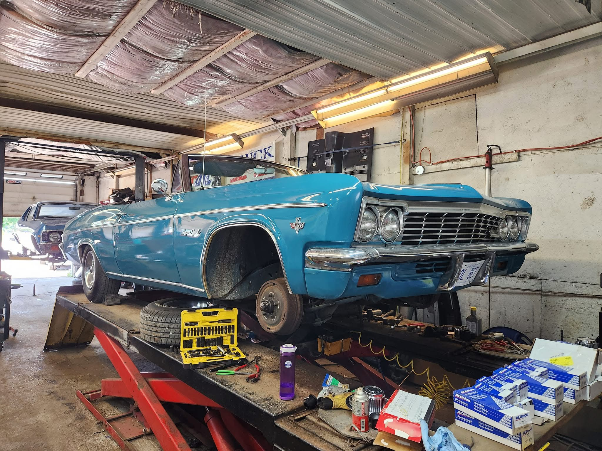
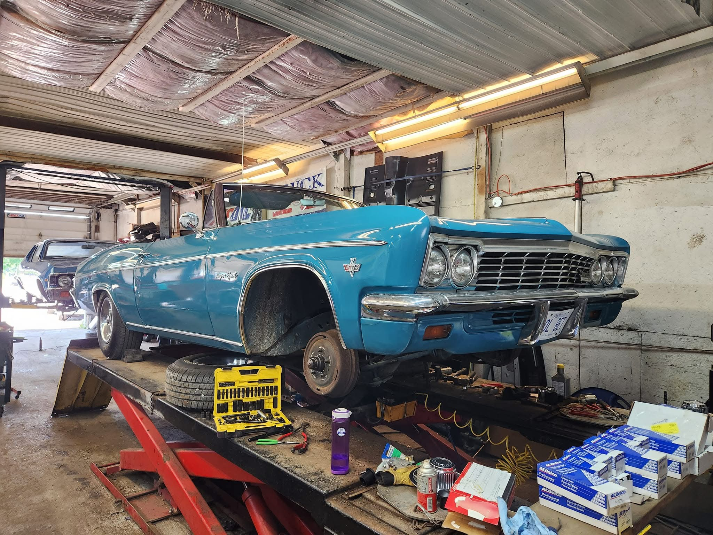

We bring timeless automobiles back to life with unparalleled attention to detail and a passion for craftsmanship. At Twisted Classics, every vehicle tells a story, and we are here to ensure that story continues for generations to come.
Our expertise in classic car restoration ensures your treasured vehicles retain their original charm while incorporating modern performance and reliability. From intricate frame-off restorations to custom paintwork that breathes new life into vintage designs, we deliver results that exceed expectations.
Whether you’re a proud owner of a rare vintage beauty or seeking expert care for your modern vehicle, our team of skilled professionals combines tradition and innovation to keep your ride in peak condition. No project is too big or too small—we treat every vehicle as if it were our own.
Driven by passion and powered by precision, Twisted Classics is your trusted partner in automotive excellence. Join us as we preserve the legacy of classic cars and redefine what it means to drive history forward.
Our expertise in classic car restoration is matched only by our commitment to quality. Whether it’s a rare gem or a modern vehicle in need of repair, Twisted Classics delivers exceptional results every time.
About the Owner: Matt McLaren Twisted Classics is the vision of Matt McLaren, a lifelong car enthusiast with an extraordinary story. Growing up as part of the Sick Kids Program, Matt faced unique challenges but developed a resilient spirit and an unmatched passion for classic cars. From a young age, he found solace and joy in working on automobiles, honing his skills with dedication and love for the craft. His journey, marked by determination and creativity, has shaped Twisted Classics into the exceptional automotive workshop it is today.
About Twisted Classics: Twisted Classics was born from Matt’s deep passion for preserving the timeless beauty of classic cars while offering exceptional care for modern vehicles. With decades of combined experience, our team of skilled automotive experts takes pride in delivering top-notch services, ranging from meticulous restorations that honor a car’s legacy to routine maintenance that ensures peak performance. At Twisted Classics, every car is treated like a masterpiece, and every customer becomes part of the family.


 
